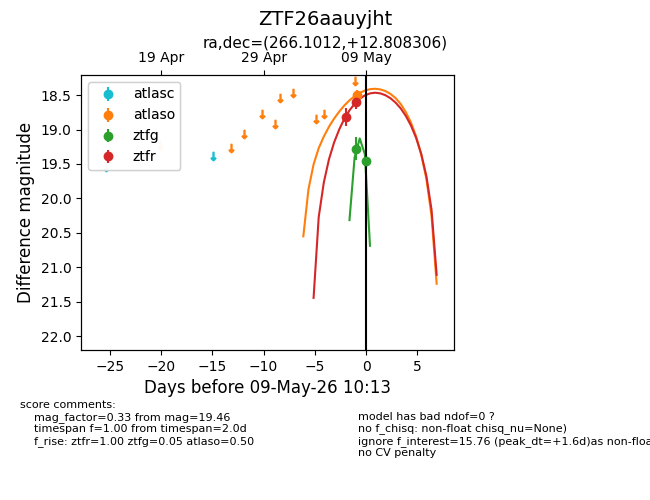
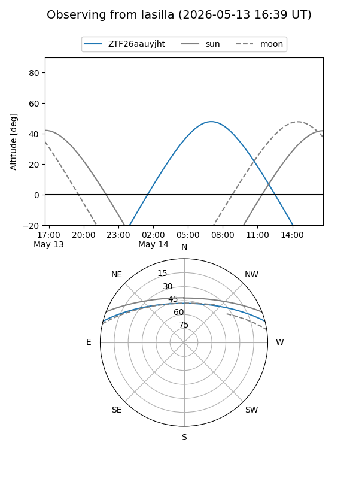
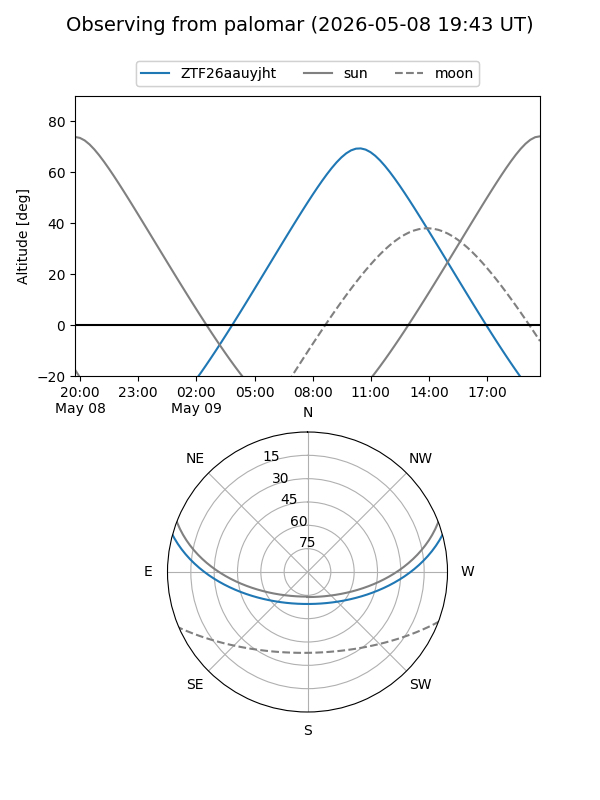
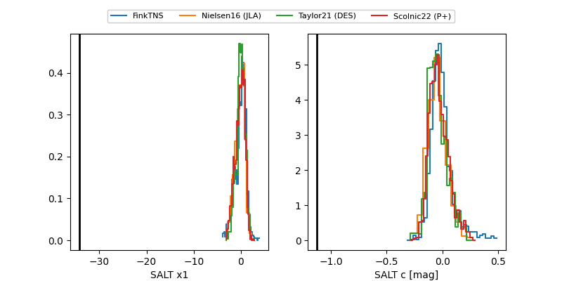

ZTF26aauyjht
Target ZTF26aauyjht at 2026-05-09 10:14
Aliases and brokers:
FINK: link
Lasair: link
ALeRCE: link
alt names
ZTF26aauyjht (ztf,fink_ztf)
Coordinates:
equatorial (ra, dec) = 266.1012,+12.80831
equatorial (HMS+DMS) = 17:44:24.29,+12:48:29.90
galactic (l, b) = (37.1643,+20.56784)
Flags:
Photometry:
last atlaso=18.49, ztfg=19.46, ztfr=18.60
1 atlaso, 2 ztfg, 2 ztfr detections
Lightcurve

Visibility


Additional plots
